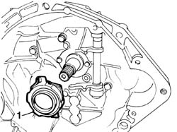
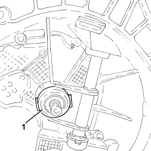

1820A30 thrust bearing - r + r with gearbox removed
- Path
- Procedures > 18 CLUTCH UNIT > 1820 CLUTCH RELEASE CONTROLS > 1820A CLUTCH RELEASE MECHANICAL CONTROL > 1820A30 thrust bearing - r + r with gearbox removed
- Kind
- repair procedure (removal / refitting; the operation number is the code)
- Applies to
- all engines; all production periods
- Interactive page
- https://sloeber94.github.io/elrnDB-fDbl/en/#/2584568
Applies to: engines: 1.2 8v, 1.6 16v, 1.3 JTD 16V, 1.9 JTD 8V, 1.9 DIESEL; all production periods
 Removing
Removing
 Refitting
Refitting1. Push the clutch release lever and remove the clutch release bearing from its seating on the gearbox main shaft.

Applies to: engines: 1.2 8v, 1.6 16v, 1.3 JTD 16V, 1.9 JTD 8V, 1.9 DIESEL; all production periods
Refitting
RemovingFit the clutch release bearing on the main shaft.
Pull the clutch release lever, moving the bearing to the correct position.
Applies to: engines: 1.4 8v; production: da 12/03; only with equipment: MY 2005
Removing
Refitting
Applies to: engines: 1.4 8v; production: da 12/03; only with equipment: MY 2005
Refitting
Removing